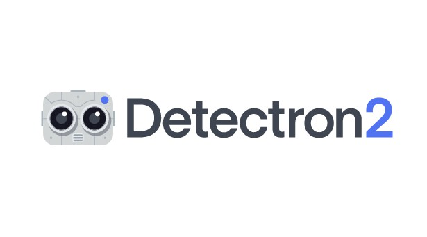
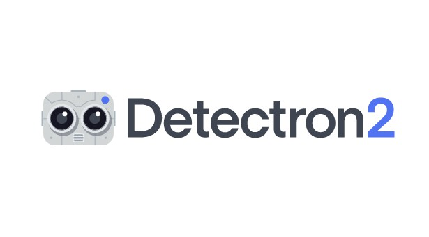

Hi, I'm Gaurav Garg
Full-Stack developer
I am a Computer Science graduate with extensive industrial experience in Application Development. I am highly skilled in programming for Software Development projects, especially Linux-based Embedded Systems.
I love exploring new things!
Let's go deep into my work experience!


 
